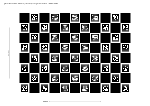
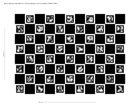

For each identified Mira220 / ND3630 stack at its final 850 nm filter, illumination and locked focus state.
Digital template validation is not physical calibration. Print at actual size / 100%, disable fit or shrink, and verify both 100 mm bars. Mount the target flat on rigid matte backing and check its actual infrared contrast.
297 x 210 mm page. Pattern: 220 x 160 mm.
Open printable A4 PDF | Open vector SVG

279.4 x 215.9 mm page. Same physical pattern, not a resized A4 pattern.
Open printable Letter PDF | Open vector SVG

Target identity: pitrac-charuco-11x8-20mm-v1,
11 x 8 squares, 20 mm square pitch, 15 mm markers, DICT_5X5_250,
current (non-legacy) OpenCV 4.13 layout.
Machine-readable board definition.
The images on this page are scaled for viewing. Measure the printed scale bars, not the screen. No camera coefficients, pupil coordinate, enclosure pose, physical accuracy, or production readiness are established by these files.